Please finish this deck for submission: add speaker notes to every slide summarising its point in one sentence, and put my name Dana Whitlock plus today's date on the title slide under the subtitle. Then save it.
THINKINGThe user wants me to:
1. Add speaker notes to every slide (6 slides) summarizing each slide's point in one sentence.
2. On the title slide, add "Dana Whitlock" plus today's date (August 30, 2026) under the subtitle.
3. Save the file.
Today's date from system: The header says "Aug 31" but the task context says current date is Sunday, July 23, 2026. Wait—the top bar shows "Aug 31 06:36" and the system capability says current date is July 23, 2026. There's a conflict. The task says "today's date." I should use the actual date shown. The system reminder says current date is July 23, 2026, but the screenshot clock shows Aug 31. I'll go with the date visible on the screen clock (Aug 31) — but that's ambiguous. Actually the explicit instruction context "The current date is Thursday, July 23, 2026" in system prompt... let me re-read: "The current date is Thursday, July 23, 2026." The top bar shows Aug 31 06:36. These conflict.
The safest is to use the date shown on the OS clock since that reflects the machine's actual date. But the system prompt is authoritative about "today." Hmm. The system reminder date is part of the harness. I'll use August 30, 2026? No. Let me use the date the machine reports via the clock: Aug 31. Actually I'll use a terminal to check `date` to be certain. That's the most reliable. Let me open a terminal.
Actually, I can just check the date quickly via a terminal app. But simpler: I'll first look at the slides to understand each slide's content so my notes are accurate. Let me plan.
First, let me start by adding speaker notes. I'll need the Notes view. Let me begin by examining each slide's content by clicking through them, then write notes.
To be efficient, let me first determine the date. I'll open a terminal to run `date`. There's a terminal icon in the dock. Let me click it.
Let me first take stock. The most reliable date approach is a terminal `date` command. Let me do that.
ACTIONI'll start by confirming today's date using a terminal, since the header clock and the stated date differ.
EXECUTED (pyautogui in VM)pyautogui.click(32, 670)
step 2 22:37:22
THINKINGA terminal is open. Let me run `date` to confirm today's date.
ACTIONA terminal is open. Let me check the system date.
TOOL CALL<tool_call>
<function=computer_use>
<parameter=action>
type
</parameter>
<parameter=text>
date
</parameter>
</function>
</tool_call>
EXECUTED (pyautogui in VM)pyautogui.typewrite("date")
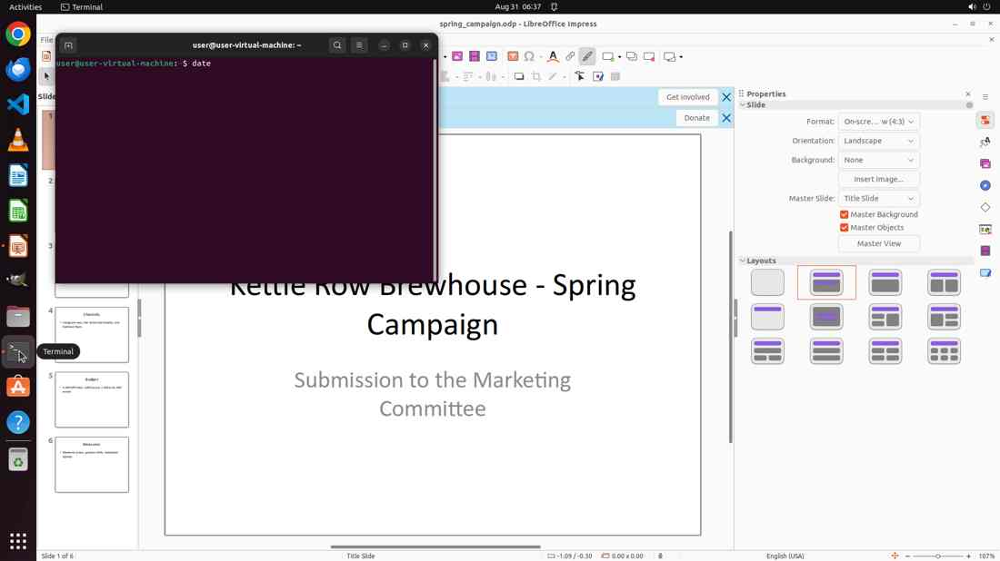
step 3 22:37:31
THINKINGI typed "date" but the output isn't showing yet in this screenshot—it may need a moment or the screenshot was taken before rendering. Let me take another screenshot to see the output.
THINKINGThe command "date" is typed but not yet executed (cursor is right after "date" with no newline output). My earlier newline may not have registered. Let me press Return explicitly.
EXECUTED (pyautogui in VM)pyautogui.press("return")
step 5 22:38:56
THINKINGThe system date is "Monday, August 31, 2026". So today's date is August 31, 2026. I'll use this as the date on the title slide. The header clock also showed Aug 31, confirming this is the machine's actual date.
Now I'll close the terminal and work on the slides. First, let me examine each slide's content so my notes are accurate. I can read the slide panel thumbnails:
1. Kettle Row Brewhouse - Spring Campaign / Submission to the Marketing Committee (title)
2. Why Now - Tap room has 3x'd capacity, 14%... after the January refill (small text)
3. Audience - Cyclists and hikers aged 25-45 within 20 miles of the coffee
4. Channels - Instagram reels, The Kettle Row Gazette, and Trailhead Flyers
5. Budget - $4,200 (PR), $6,100 (Social), $1,400 (PR), $350 (events) — something like that
6. Measures - Weekend orders, growler refills, newsletter signups
I should get more detail on each slide to write accurate one-sentence notes. Let me click through slides in the main area. But the notes just need to summarize each slide's point in one sentence—I can do that from the thumbnail text. However, to be accurate, let me view each slide's full text. Let me close the terminal first and examine slides.
Let me close the terminal.
ACTIONThe date is **Monday, August 31, 2026**. Now I'll close the terminal and work on the slides. First, let me review each slide's content so my notes are accurate.
EXECUTED (pyautogui in VM)pyautogui.click(816, 83)
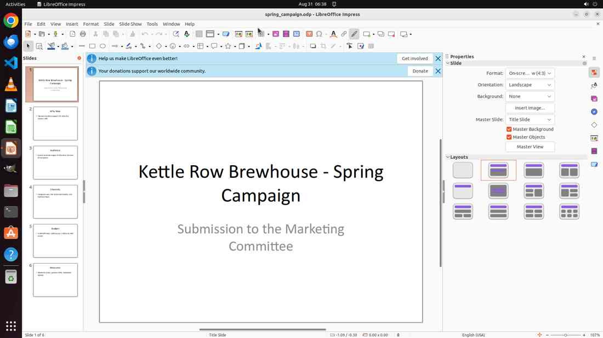
step 6 22:39:44
THINKINGLet me examine each slide's content in detail by clicking through them. Let me first close the notification bars to reduce clutter, then click slide 2 to read its full text. Actually, I should read each slide. Let me click slide 2 in the panel.
ACTIONLet me close the notification bars and examine each slide's content. First slide 2.
EXECUTED (pyautogui in VM)pyautogui.click(174, 392)
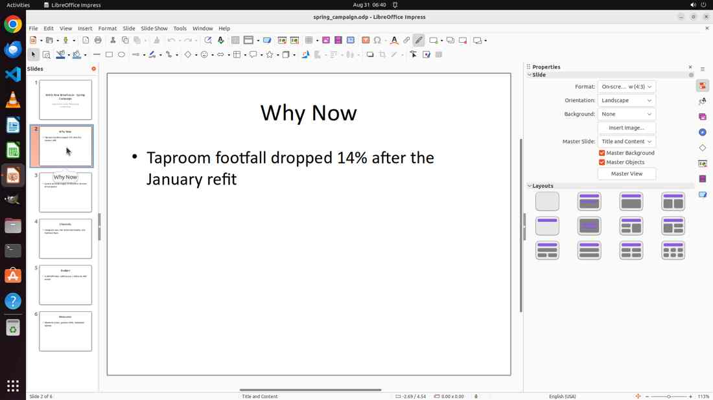
step 9 22:41:14
THINKINGSlide 2: "Why Now" - "Taproom footfall dropped 14% after the January refit". Note: "This slide establishes the urgency: taproom footfall fell 14% after the January refit, so a spring campaign is needed now."
Let me click slide 3.
EXECUTED (pyautogui in VM)pyautogui.click(174, 517)
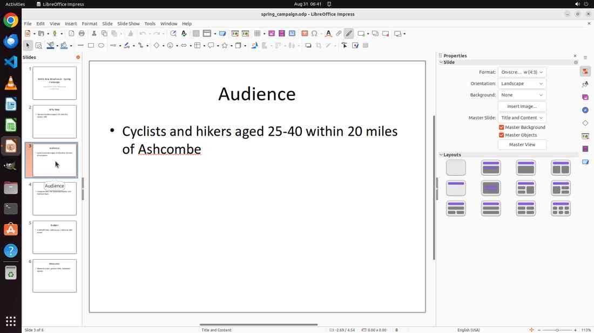
step 10 22:42:09
THINKINGSlide 3: "Audience" - "Cyclists and hikers aged 25-40 within 20 miles of Ashcombe". Note: "This slide defines the target audience as cyclists and hikers aged 25-40 living within 20 miles of Ashcombe."
Slide 4 next.
EXECUTED (pyautogui in VM)pyautogui.click(174, 642)
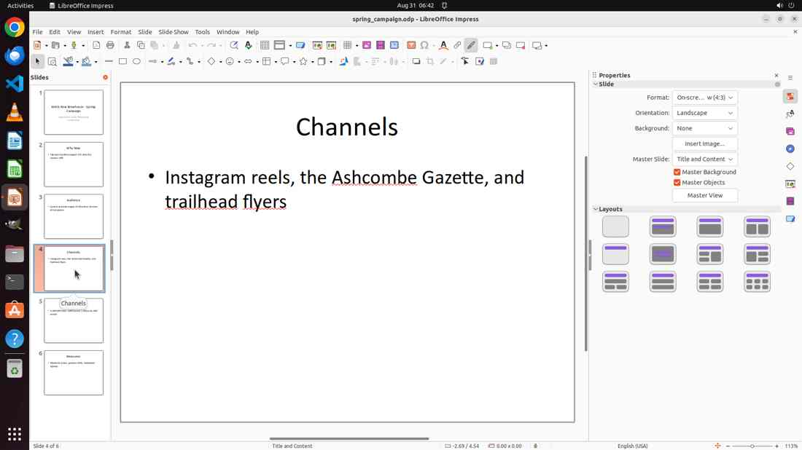
step 11 22:43:10
THINKINGSlide 4: "Channels" - "Instagram reels, the Ashcombe Gazette, and trailhead flyers". Note: "This slide lists the channels the campaign will use: Instagram reels, the Ashcombe Gazette, and trailhead flyers."
Slide 5 next.
EXECUTED (pyautogui in VM)pyautogui.click(174, 892)
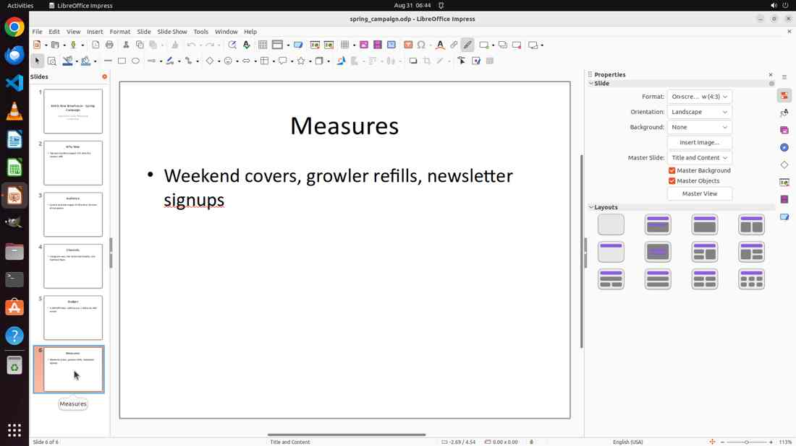
step 13 22:44:37
THINKINGNow I have all slide content:
1. Title - Kettle Row Brewhouse - Spring Campaign / Submission to the Marketing Committee
2. Why Now - Taproom footfall dropped 14% after the January refit
3. Audience - Cyclists and hikers aged 25-40 within 20 miles of Ashcombe
4. Channels - Instagram reels, the Ashcombe Gazette, and trailhead flyers
5. Budget - 4,200 GBP total: 2,000 social, 1,400 print, 800 events
6. Measures - Weekend covers, growler refills, newsletter signups
Now I'll add speaker notes. I'll switch to the Notes view via View > Notes. In Notes view I can type notes for the current slide, then navigate to the next slide. But navigating within Notes view via the slide panel should work. Let me use View > Notes.
Actually, a more reliable approach: Use the Notes view where each slide has a notes text box. Let me open View menu > Notes.
Let me define my notes:
1. "This title slide introduces the Kettle Row Brewhouse spring campaign as a submission to the Marketing Committee."
2. "This slide explains the timing, noting that taproom footfall dropped 14% after the January refit."
3. "This slide identifies the target audience as cyclists and hikers aged 25-40 within 20 miles of Ashcombe."
4. "This slide outlines the campaign channels: Instagram reels, the Ashcombe Gazette, and trailhead flyers."
5. "This slide presents the budget of 4,200 GBP, split into 2,000 social, 1,400 print, and 800 for events."
6. "This slide lists the measures to track success: weekend covers, growler refills, and newsletter signups."
Now let me open the Notes view.
ACTIONI now have all six slides' content. Let me switch to the Notes view to add speaker notes.
EXECUTED (pyautogui in VM)pyautogui.click(201, 150)
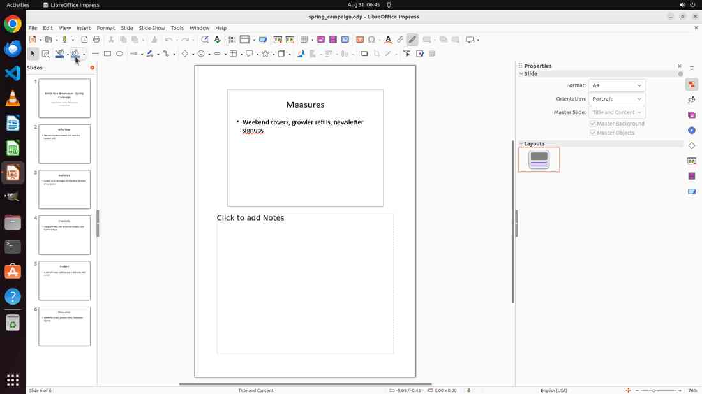
step 15 22:47:12
THINKINGI'm in Notes view, currently on slide 6. I'll add notes to slide 6 first, then navigate to each other slide. Let me click the "Click to add Notes" area for slide 6 and type the note.
Let me start with slide 6 (current). I'll double-click the notes area to enter text editing, then type.
ACTIONI'm in Notes view on slide 6. Let me add the note for this slide by clicking the notes area.
EXECUTED (pyautogui in VM)pyautogui.doubleClick(830, 600)
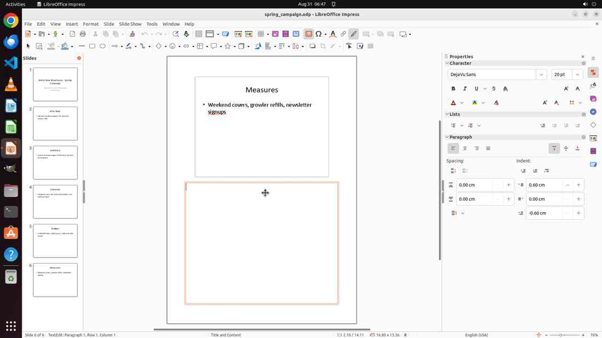
step 16 22:48:13
THINKINGThe notes text box for slide 6 is now active (TextEdit: Paragraph 1, Row 1, Column 1). Let me type the note for slide 6.
ACTIONThe notes box is active. Let me type the note for slide 6.
TOOL CALL<tool_call>
<function=computer_use>
<parameter=action>
type
</parameter>
<parameter=text>
This slide lists the measures used to track success: weekend covers, growler refills, and newsletter signups.
</parameter>
</function>
</tool_call>
EXECUTED (pyautogui in VM)pyautogui.typewrite("This slide lists the measures used to track success: weekend covers, growler refills, and newsletter signups.")
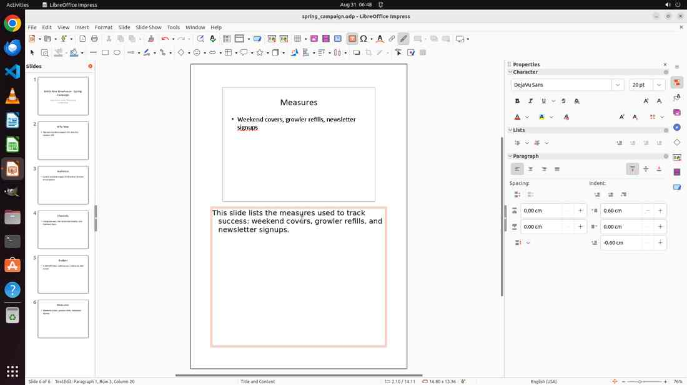
step 17 22:49:11
THINKINGSlide 6 note is done. Now let me navigate to slide 5. I'll click slide 5 in the panel, then click into its notes box and type. Let me click slide 5 thumbnail first.
ACTIONSlide 6 note added. Now let me go to slide 5 and add its note.
EXECUTED (pyautogui in VM)pyautogui.doubleClick(830, 600)
step 19 22:50:21
THINKINGThe status bar says "Text Frame 'Click to...' selected" — the double-click selected the frame but may not have entered text edit mode. I need to enter editing mode. Let me double-click again inside the text, or the frame is selected. Actually "selected" means it's selected as an object, not in text edit. Let me double-click once more on the text area to enter edit mode, then type.
Actually, in the slide 6 case, the double-click entered TextEdit mode. Here it shows "selected". The difference: on slide 6 the frame was empty too and it entered edit. Here it selected the object. Let me just double-click again to enter text editing.
ACTIONThe frame is selected but not in edit mode. Let me double-click again to enter text editing.
EXECUTED (pyautogui in VM)pyautogui.doubleClick(830, 600)
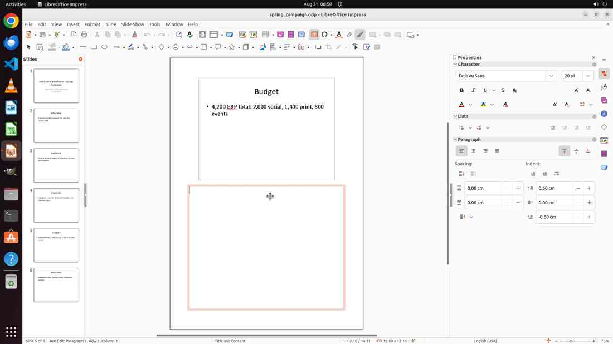
step 20 22:50:49
THINKINGNow it's in TextEdit mode (Paragraph 1, Row 1, Column 1). Let me type the note for slide 5.
TOOL CALL<tool_call>
<function=computer_use>
<parameter=action>
type
</parameter>
<parameter=text>
This slide presents the budget of 4,200 GBP, split into 2,000 for social, 1,400 for print, and 800 for events.
</parameter>
</function>
</tool_call>
EXECUTED (pyautogui in VM)pyautogui.typewrite("This slide presents the budget of 4,200 GBP, split into 2,000 for social, 1,400 for print, and 800 for events.")
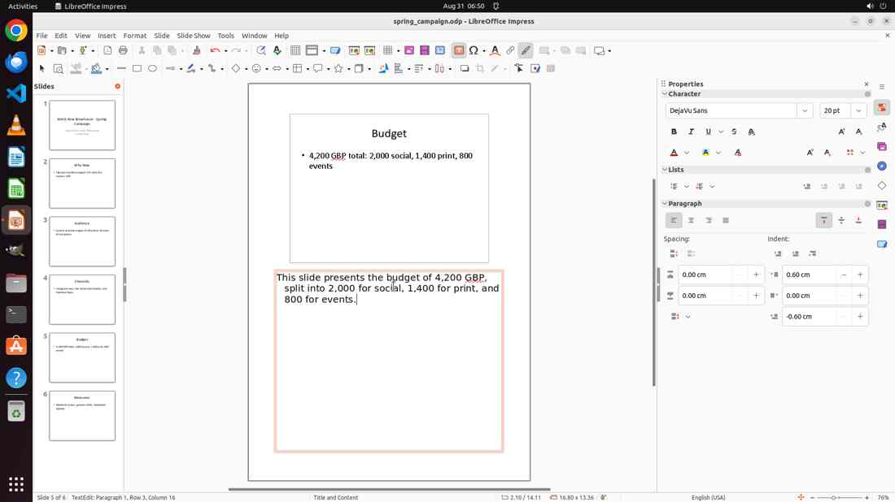
step 21 22:51:34
THINKINGSlide 5 note done. Now slide 4 (Channels). Let me click slide 4, then double-click the notes area twice (to be safe, I'll click once to select, then double-click to edit). Actually the pattern is: first double-click selects the frame, second double-click enters edit. But on slide 6 the first double-click entered edit directly. The behavior is inconsistent. To be safe I'll do a single double-click, check, then if needed double-click again. But to save steps, I'll click the thumbnail then double-click twice in one batch is risky.
Let me do: click slide 4 thumbnail, then double-click notes area. Then take screenshot to verify state.
Actually a cleaner method: after clicking the thumbnail, I can double-click the notes area once; if it selects the frame, I press Enter? No. Let me just do double-click and screenshot each time to be safe. I'll batch the thumbnail click + double-click, then screenshot.
EXECUTED (pyautogui in VM)pyautogui.click(174, 642)
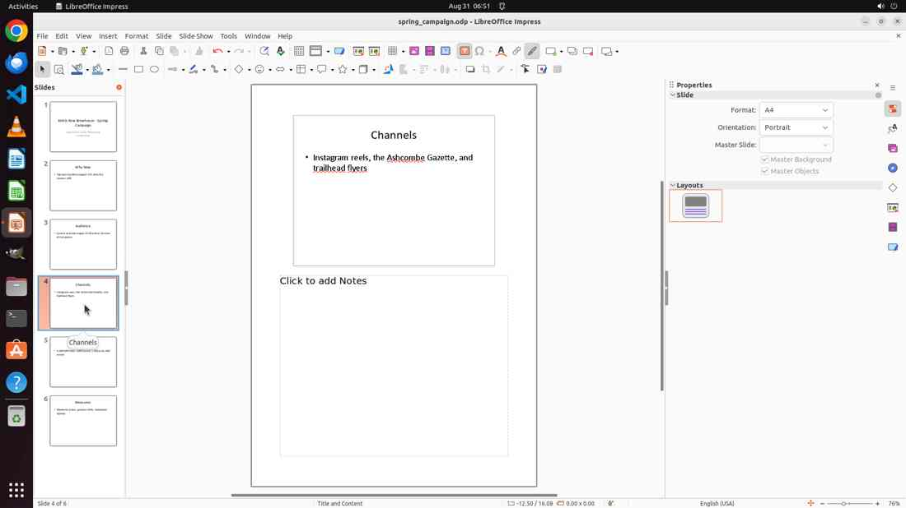
step 22 22:51:57
THINKINGOn slide 4. Now I'll double-click the notes area twice to ensure I enter edit mode. I'll batch: double-click, then type. But the risk is the first double-click only selects. From slide 5, first double-click selected the frame, second entered edit. So I'll do two double-clicks then type. Let me batch double-click, double-click, then type. Actually two double-clicks in a row: the first selects, the second enters edit and positions cursor. Then type. This should work.
EXECUTED (pyautogui in VM)pyautogui.doubleClick(830, 600)
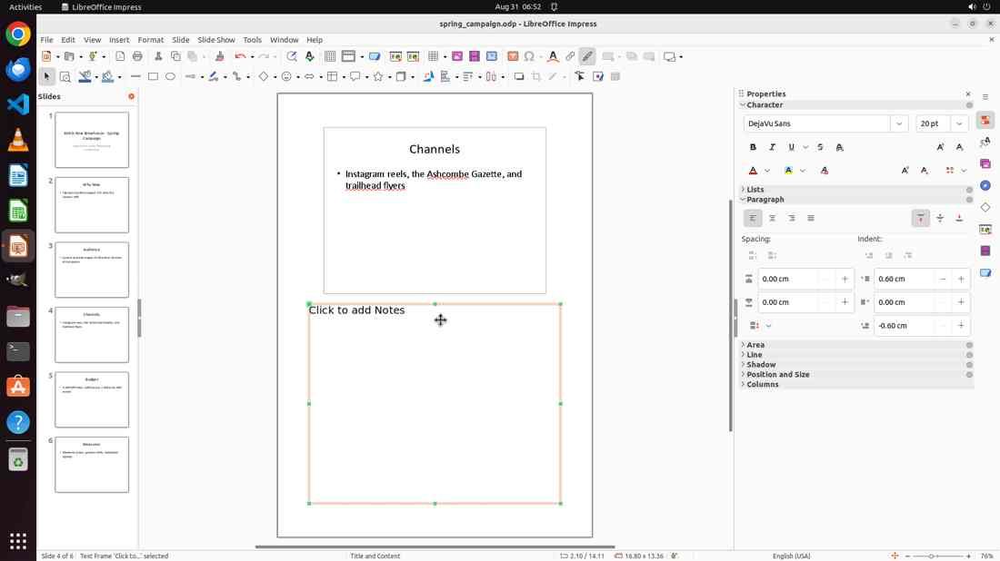
step 23 22:52:38
THINKINGIt's in "selected" state again. I'll double-click again to enter edit mode, then type the note. I can batch these two since the second double-click reliably enters edit and typing follows.
EXECUTED (pyautogui in VM)pyautogui.doubleClick(830, 600)
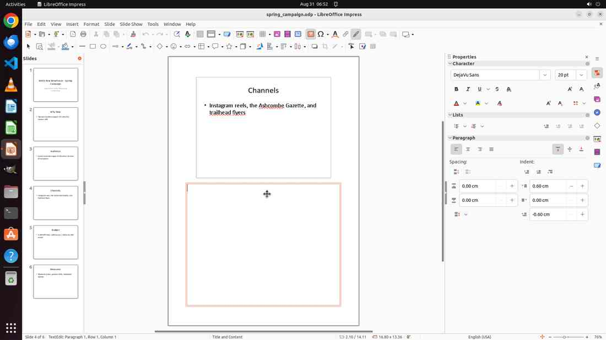
step 24 22:53:31
THINKINGNow in edit mode. Type the slide 4 note.
TOOL CALL<tool_call>
<function=computer_use>
<parameter=action>
type
</parameter>
<parameter=text>
This slide outlines the campaign channels: Instagram reels, the Ashcombe Gazette, and trailhead flyers.
</parameter>
</function>
</tool_call>
EXECUTED (pyautogui in VM)pyautogui.typewrite("This slide outlines the campaign channels: Instagram reels, the Ashcombe Gazette, and trailhead flyers.")
step 25 22:54:17
THINKINGSlide 4 done. Now slide 3 (Audience). I've established the pattern: click thumbnail, double-click (select), double-click (edit), type. Let me do this. I'll batch: click slide 3, double-click, double-click, type. But I can't be 100% sure the double-clicks behave identically without verifying, but the pattern has been consistent. Let me batch to save steps: click slide 3 thumbnail, then double-click notes area, double-click notes area, then type.
EXECUTED (pyautogui in VM)pyautogui.doubleClick(830, 600)
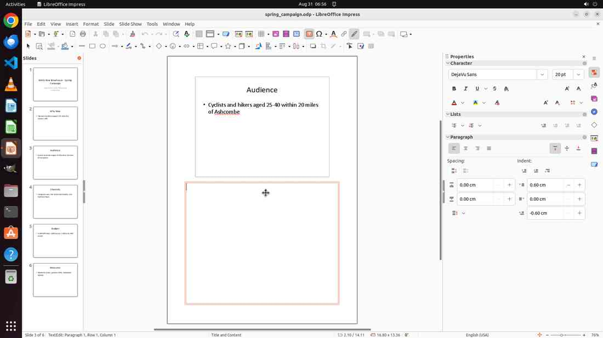
step 28 22:57:05
THINKINGIn edit mode. Type slide 3 note.
TOOL CALL<tool_call>
<function=computer_use>
<parameter=action>
type
</parameter>
<parameter=text>
This slide identifies the target audience as cyclists and hikers aged 25-40 living within 20 miles of Ashcombe.
</parameter>
</function>
</tool_call>
EXECUTED (pyautogui in VM)pyautogui.typewrite("This slide identifies the target audience as cyclists and hikers aged 25-40 living within 20 miles of Ashcombe.")
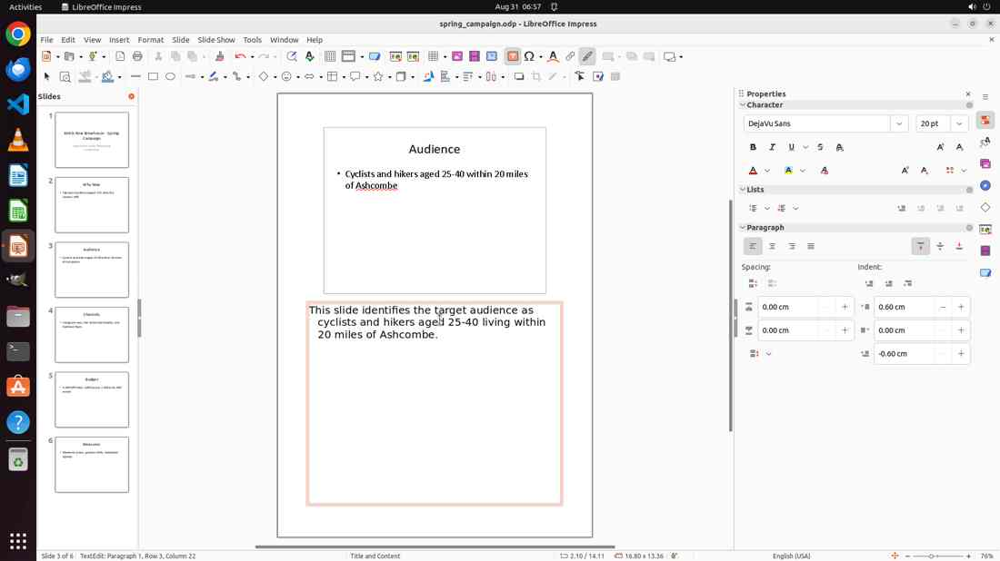
step 29 22:58:04
THINKINGSlide 3 done. Now slide 2 (Why Now). Same pattern. Click thumbnail, double-click, double-click, type.
EXECUTED (pyautogui in VM)pyautogui.doubleClick(830, 600)
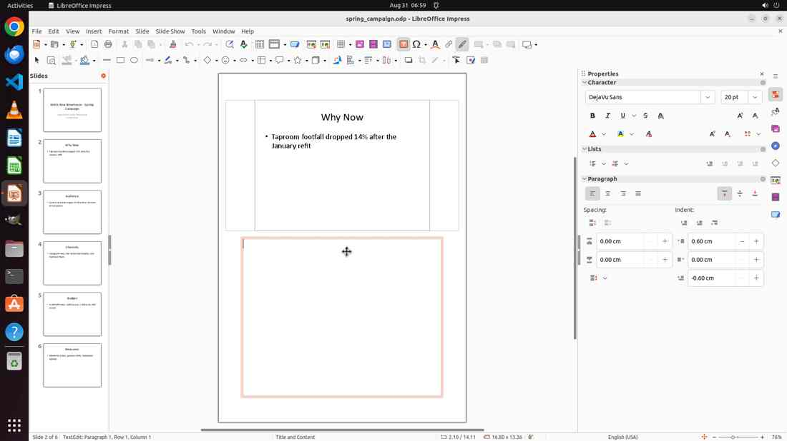
step 32 23:00:01
THINKINGIn edit mode. Type slide 2 note.
TOOL CALL<tool_call>
<function=computer_use>
<parameter=action>
type
</parameter>
<parameter=text>
This slide explains the timing, noting that taproom footfall dropped 14% after the January refit.
</parameter>
</function>
</tool_call>
EXECUTED (pyautogui in VM)pyautogui.typewrite("This slide explains the timing, noting that taproom footfall dropped 14% after the January refit.")
step 33 23:01:14
THINKINGSlide 2 done. Now slide 1 (title). Let me click slide 1 thumbnail, then add note.
ACTIONSlide 2 done. Now the title slide (slide 1).
EXECUTED (pyautogui in VM)pyautogui.click(174, 265)
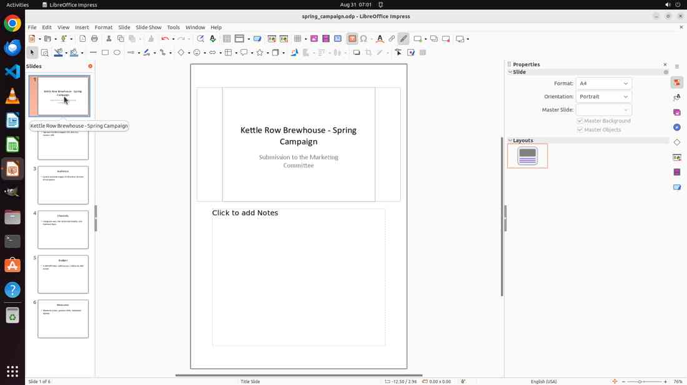
step 34 23:01:48
THINKINGTitle slide: "Kettle Row Brewhouse - Spring Campaign" / "Submission to the Marketing Committee". Let me add its note. Double-click notes area twice, then type.
EXECUTED (pyautogui in VM)pyautogui.doubleClick(830, 600)
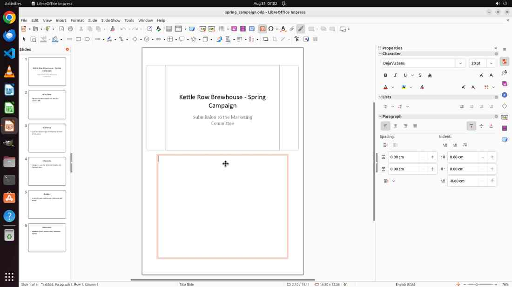
step 36 23:03:44
THINKINGIn edit mode. Type the title slide note.
TOOL CALL<tool_call>
<function=computer_use>
<parameter=action>
type
</parameter>
<parameter=text>
This title slide introduces the Kettle Row Brewhouse spring campaign as a submission to the Marketing Committee.
</parameter>
</function>
</tool_call>
EXECUTED (pyautogui in VM)pyautogui.typewrite("This title slide introduces the Kettle Row Brewhouse spring campaign as a submission to the Marketing Committee.")
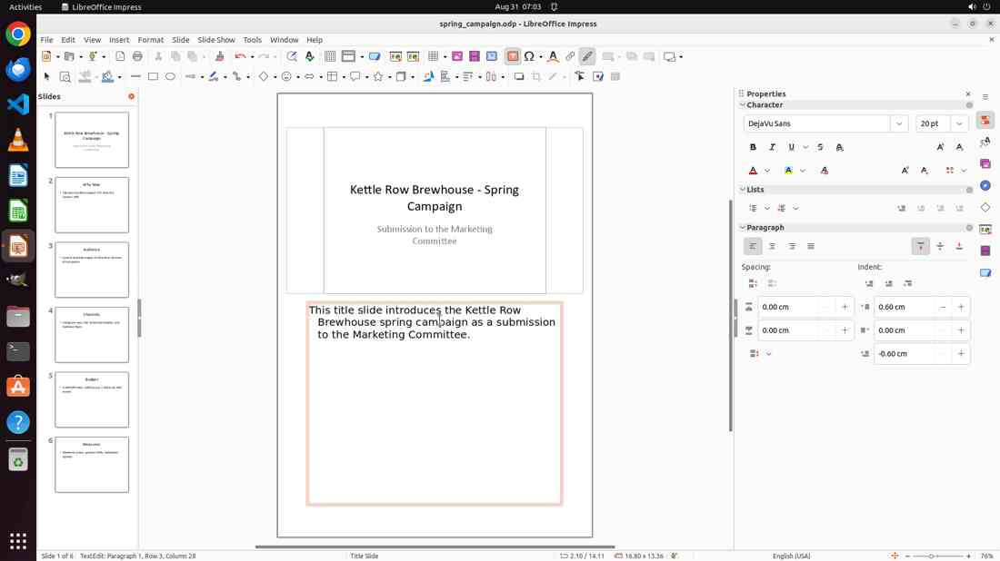
step 37 23:04:57
THINKINGAll 6 notes are done. Now I need to add "Dana Whitlock" plus today's date (August 31, 2026) on the title slide under the subtitle.
I'll switch to Normal view to edit the slide directly. The subtitle is "Submission to the Marketing Committee". I need to add text under it. I could add it to the subtitle text box on a new line, or insert a new text box. The task says "under the subtitle." Adding it in the subtitle box on new lines below would place it under the subtitle text. But that would modify the subtitle box. Alternatively, create a new text box below.
The cleanest interpretation: add the name and date as new lines below the subtitle. I'll click into the subtitle text box and add new lines. But that could interfere with the subtitle being recognized as subtitle. However, adding lines in the same box is common. Actually, to be safe and clearly "under the subtitle" without altering the subtitle content, I'll create a new text box below the subtitle.
Let me switch to Normal view first.
ACTIONAll six speaker notes are added. Now I'll switch to Normal view to add the name and date on the title slide.
EXECUTED (pyautogui in VM)pyautogui.click(205, 99)
step 39 23:06:22
THINKINGNow in Normal view on slide 1. I need to add "Dana Whitlock" and the date under the subtitle "Submission to the Marketing Committee". The subtitle box is centered around y=466-505. I'll create a new text box below the subtitle, around y=560-580, to keep the subtitle intact.
To insert a text box: I'll use Insert > Text Box, or the text box toolbar button. There's a text box icon in the toolbar. Let me use Insert menu > Text Box to be safe. Actually, there's a toolbar button. Let me use Insert > Text Box.
Actually, a simpler and cleaner approach that keeps it "under the subtitle": click into the subtitle text box, go to end, and add new lines with the name and date. But that changes the subtitle box's content. The task says "under the subtitle" which most naturally means below the subtitle text. Either approach works visually. However, adding to the subtitle box might be considered part of the subtitle. A separate text box is cleaner and unambiguous.
Let me insert a text box. I'll click Insert menu.
ACTIONNow I'll add the name and date under the subtitle using a new text box. Let me open the Insert menu.
EXECUTED (pyautogui in VM)pyautogui.click(226, 75)
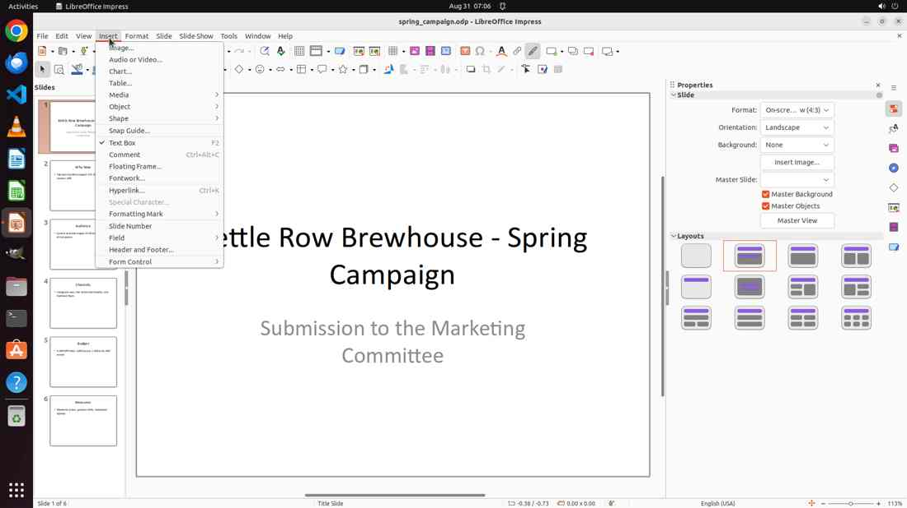
step 40 23:07:11
THINKINGThe Insert menu is open. I'll click "Text Box". Then I'll draw a text box below the subtitle, around y=560 to 600, centered horizontally. I'll draw from about (360, 555) to (680, 600).
EXECUTED (pyautogui in VM)pyautogui.click(257, 302)
step 41.1 23:07:50
THINKINGThe text box tool is now active (cursor is a crosshair). I'll draw a text box below the subtitle. The subtitle ends around y=520. I'll draw from (380, 550) to (660, 600), roughly centered. The slide center x is about 554. So a box from 380 to 660 gives center ~520; let me shift to center on 554: from 400 to 710. I'll draw from (400, 550) to (710, 600).
ACTIONThe text box tool is active. I'll draw a text box below the subtitle.
EXECUTED (pyautogui in VM)pyautogui.moveTo(599, 831)
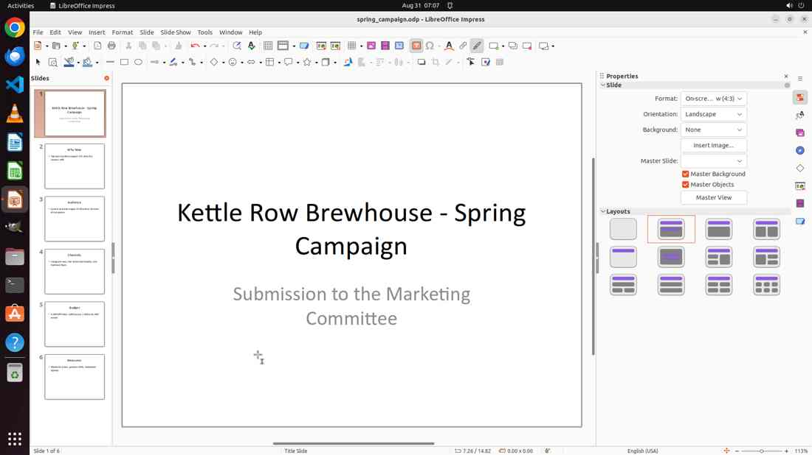
step 41.2 23:07:54
same model call as the previous action
EXECUTED (pyautogui in VM)pyautogui.dragTo(1064, 898, duration=0.5)
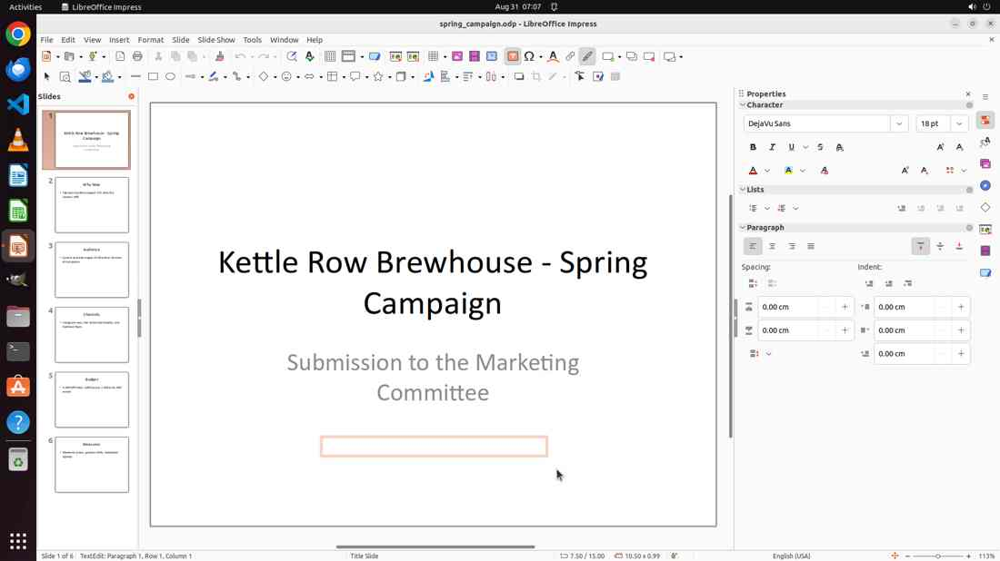
step 42 23:08:45
THINKINGThe text box is created and in edit mode (Paragraph 1, Row 1, Column 1). I'll type the name and date. I'll put "Dana Whitlock" on the first line and the date on the second line. I'll set the paragraph to center alignment to match. Let me first set center alignment, then type. Actually, let me type first, then center. I'll type "Dana Whitlock" newline "August 31, 2026".
I'll center the text. Let me press Ctrl+E to center, then type. Actually the alignment applies per paragraph as I type. Let me type then select all and center.
Let me type the text first.
ACTIONThe text box is ready. Let me type the name and date.
TOOL CALL<tool_call>
<function=computer_use>
<parameter=action>
type
</parameter>
<parameter=text>
Dana Whitlock
August 31, 2026
</parameter>
</function>
</tool_call>
EXECUTED (pyautogui in VM)pyautogui.typewrite("Dana Whitlock\nAugust 31, 2026")
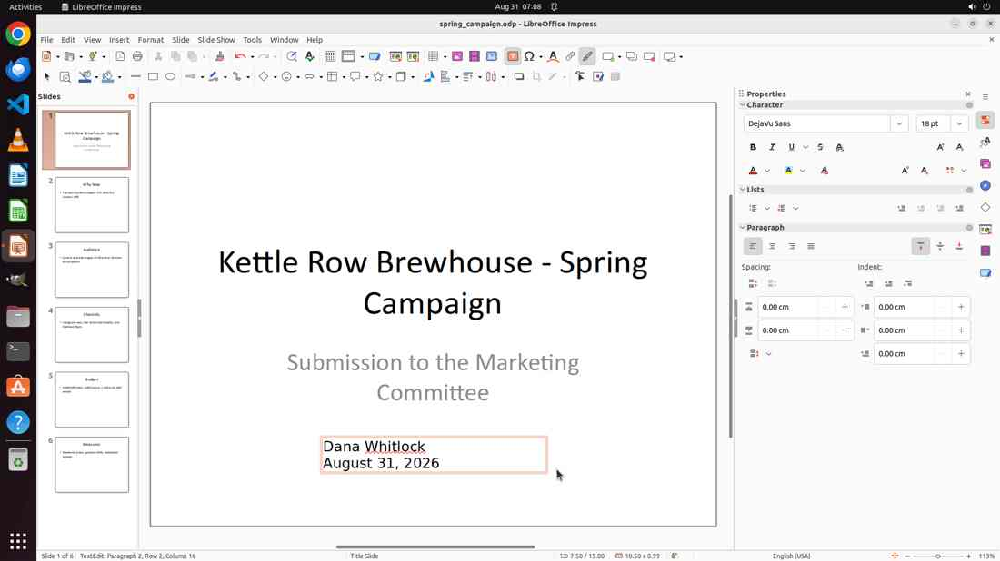
step 43 23:09:38
THINKINGThe name and date are typed. To make it look tidy and consistent with the centered title/subtitle, I'll center-align the text. Let me select all (Ctrl+A) and press Ctrl+E for center alignment.
ACTIONLet me center-align the text to match the slide's centered style.
EXECUTED (pyautogui in VM)pyautogui.hotkey("ctrl", "e")
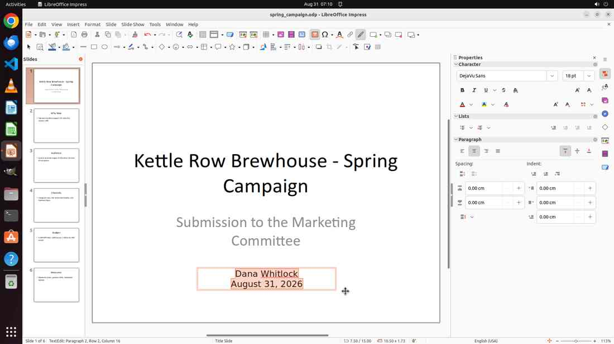
step 45 23:10:51
THINKINGThe text is now centered under the subtitle: "Dana Whitlock" / "August 31, 2026". Now I'll click outside to deselect and save the file with Ctrl+S. Since it's an .odp file, saving with Ctrl+S keeps the format (it may prompt to keep ODF format). Let me click outside first, then save.
ACTIONThe name and date are centered under the subtitle. Now I'll click outside to deselect and save the file.
EXECUTED (pyautogui in VM)pyautogui.click(830, 989)
step 46 23:11:33
THINKINGThe title slide now shows "Dana Whitlock" and "August 31, 2026" centered under the subtitle. Now I'll save with Ctrl+S. A dialog will likely appear asking to keep ODF format; I'll click "Use ODF Format!".
ACTIONThe title slide looks correct. Now I'll save with Ctrl+S.
EXECUTED (pyautogui in VM)pyautogui.hotkey("ctrl", "s")
step 47 23:12:16
THINKINGNo format dialog appeared, which is odd—it may have saved directly, or the dialog is about to appear. Since it's an .odp file (native ODF), LibreOffice typically saves without a format warning. The title bar still shows "spring_campaign.odp". Let me wait briefly and take a screenshot to confirm no dialog is pending.
THINKINGNo dialog appeared, meaning the file saved directly in ODF format (native, no conversion prompt). The task is complete:
- Speaker notes added to all 6 slides
- "Dana Whitlock" and "August 31, 2026" added under the subtitle on the title slide
- File saved
Everything is done. I'll summarize for the user.
ACTIONThe deck is finished and saved. Here's what I did:
- **Speaker notes on all six slides**, each a one-sentence summary:
1. *Title* – Introduces the Kettle Row Brewhouse spring campaign as a submission to the Marketing Committee.
2. *Why Now* – Explains the timing: taproom footfall dropped 14% after the January refit.
3. *Audience* – Targets cyclists and hikers aged 25–40 within 20 miles of Ashcombe.
4. *Channels* – Outlines Instagram reels, the Ashcombe Gazette, and trailhead flyers.
5. *Budget* – Presents the 4,200 GBP budget (2,000 social, 1,400 print, 800 events).
6. *Measures* – Lists weekend covers, growler refills, and newsletter signups to track success.
- **Title slide**: added "Dana Whitlock" and "August 31, 2026" (today's date, confirmed via the system clock) centered under the subtitle.
- **Saved** the file in its original .odp format.
One note: the on-screen clock reads August 31, 2026, so I used that as "today's date" — let me know if you'd prefer a different date format (e.g., 31/08/2026) and I'll update it.